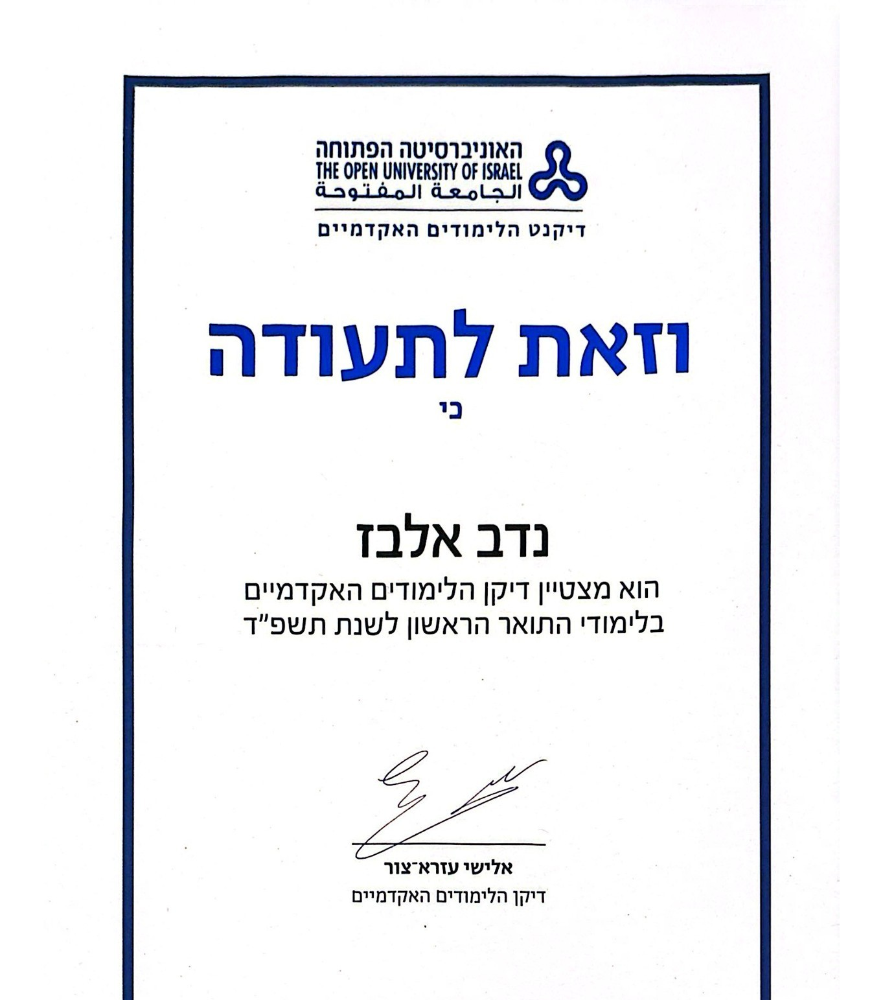

Hey! I'm
A Risk Data Analyst who turns transactions into truth.
I detect fraud, protect revenue, and build the dashboards that catch problems before they become losses.
ABOUT MEHi, I'm Nadav Elbaz, a Risk & Fraud Data Analyst at Workiz with about four years of experience turning raw payment and behavioral data into clear signals. I analyze large-scale transactional data in BigQuery to detect anomalies and fraud patterns, build automated SQL pipelines and Looker dashboards for real-time visibility, and use WEBINT/OSINT research to investigate risk before it becomes a loss.
I've spent my career translating data into decisions — from audience analytics at Israel's public broadcaster to building simulator and training systems in the field — and I'm always curious, independent, and eager to develop further.
I earned my degree through The Open University while working full-time — studying mostly independently, without a traditional classroom. It wasn't easy, but it taught me discipline, focus, and full ownership of my own growth — the same resilience I bring to every problem I tackle at work.
Hebrew (Native) · English (Fluent)
Sep 2024 – Present
Analyze large-scale transactional and behavioral data in BigQuery to detect anomalies, identify fraud patterns, and reduce chargebacks. Build automated SQL queries and interactive Looker dashboards for real-time visibility, and research clients using WEBINT/OSINT tools. Partner cross-functionally to improve payment flow efficiency and strengthen revenue protection.
Oct 2023 – Sep 2024
Conducted data analysis and audience research to support programming, marketing, and content strategy. Built dashboards and KPI reports with Looker and advanced Excel, translating insights into recommendations for research and strategy leads.
Jul 2020 – Mar 2022
Analyzed training data and built visualization dashboards for an innovative CBRN training simulator system (supplied to the Netherlands Ministry of Defence). Managed ongoing training and certification, and built KPI indicators and annual goals.
I dig past the dashboard to understand why a number moved, not just that it did.
Every query I write is in service of protecting revenue and the people behind it.
Decisions should follow the data — clean, validated, and reproducible.
The best risk strategies are built cross-functionally, with Finance, Product, and Engineering at the table.
I catch fraud patterns before they turn into chargebacks and lost revenue.
I build reporting that Finance and Product teams actually act on, not just look at.
I automate the repetitive so the team can spend time on what actually needs judgment.
I work directly with Finance, Product, and Engineering to turn insights into strategy.
Advanced proficiency in large-scale transactional & behavioral analysis
Real-time dashboards for Finance & Product
Payment platform risk & fraud tooling
Client research & investigation for fraud & risk cases
Make.com, n8n, HubSpot & Monday.com for streamlined workflows
Knowledgeable — scripting & data workflows
Independent, diligent, and eager to keep developing
Hands-on training in SQL, dashboarding, and business intelligence workflows.
Foundations in financial accounting, pension funds, and quantitative analysis.
Payroll taxes & payroll processing.
Chargebacks, dispute resolution & payments analytics.
Applying AI to risk assessment and fraud workflows.
Advanced querying and optimization for large-scale transactional datasets.
No-code automation and workflow design.
Awarded for outstanding academic achievement in undergraduate studies.

I'm using Claude Code to build and ship personal data & automation projects — this section will showcase them as they launch.
The 'Orev' Unit, Paratroopers Brigade (2016–2018); active reserve duty with Iron Dome Air Defense Command.
Aharai! (youth leadership), Perach (tutoring), Place IL (decreasing social gaps) & Kravitech (mentoring reservists).
Always working through a book, fiction or otherwise.
Chasing a good view at the end of the day.